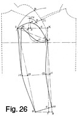
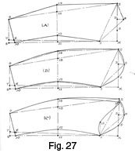
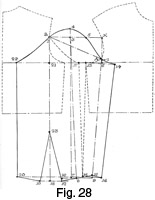
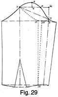
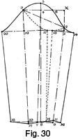
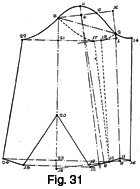
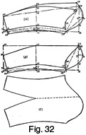

Early 1940's—Ladies' Garment Cutting and Making
by
F. R. Morris
Chapter V—Sleeve Cutting
Basic System for Sleeves
THE basis for drafting sleeve styles is divided into two sections, firstly the two-piece type with seams at the fore and hindarm, and secondly the one-piece variety having a seam underneath the sleeve to run with the sideseam of the coat or alternatively a seam at the forearm; in either instance there is no hind-arm seam.
For strictly tailored styles of costume jackets or long coats, the usual rule is to utilize the two-piece basis for the shapely run of seams, and slim line is more in keeping with the general restrained and neat effect of the ensemble. The one-piece basis will be found advantageous for adaptation to present-day sportswear and dressy styles, with their unorthodox pleated or darted sleeve effects. In a hindarm in one piece without a seam the plain character of the sleeve permits of easier manipulation and variation of shape than the more definite lines of the two-piece basis.
No decided seam runs are definite for either sleeve, while manipulation of the pattern by cutting open or transposing seams to meet the needs of the sleeve design is necessary to gain the requisite effect. For example, a "cartridge-pleated" sleeve has no definite fixed size or shape, but depends upon the number of pleats or amount of material taken up in the pleating for the alteration in shape from the original one-piece draft; a sleeve with fullness above the elbow may be based upon a two-piece draft with the seam at the hindarm above the elbow eliminated, and the whole upper-arm section cut in one piece, whilst the forearm is in two pieces for the attainment of a shaped cuff.
Manipulation of the basis pattern by splitting open and opening out for darted and pleated effects is essential in the cutting of modern sleeves; we cannot expect a system to adapt itself to all the varied and intricate designs that are in vogue without departing from the orthodox principles governing the original draft. Modern sleeves cannot be cut by a systematic draft basis; the effect is more of drapery than cutting, so knowledge of where to manipulate a pattern to obtain a pouched or pleated effect is of more importance than attempting to achieve the same result by a straightforward draft system.
The ability to visualize a design in its component parts before being sewn together, where length or width has been added to arrive at the finished effect, can be attained by experimenting with muslin, for there are set principles governing this manipulation which become familiar with a little experience. Elsewhere in the book an endeavour will be made to indicate the general methods adopted by the author for the production of pouched and draped sleeve effects.
In deciding the dimensions and constructional points necessary for the basis sleeve draft, there are two factors to consider—
(1) The height, width and total circumference of the scye or armhole into which the sleeve must sew.
(2) The balance or "hang" of the sleeve in the scye, in accordance with the figure attitude, to give a maximum of freedom of movement in wear.
The balance or "hang" of the sleeve varies with different figure attitudes inasmuch as a stooping figure requires adjustment of the sleeve to a more forward "hang," while for erect figures, a rebalancing of the sleeve backwards will be needed.
Sleeves for special purposes also need adjustment of constructional points, for a garment used for golfing, motoring or riding exclusively to any other consideration will require a sleeve in accordance with the position of the arms for the majority of the time.
The sleeve in the scye must be so balanced that a good "hang" is obtained when the arm is in the natural position at the side and also to give essential freedom in movement to the greatest extent and radius. Therefore, a point on the back scye and a point at the front scye, called the back and front pitches, decide the balance of the sleeve in the scye. With a normal sleeve raising or lowering of each of these pitches will result in a forward or backward hanging sleeve. The back pitch is decided by the position of the hindarm seam in two-piece sleeves, for a wider top-sleeve would need a lower pitch and vice versa. The front pitch decides the "hang" of the sleeve in the scye, for the sleeve hinges at this point, and sewing round to the back pitch locates this point on the basis of width across the sleeve head.
After the location of the pitches the next factor to consider is the height of the sleeve in the scye above the back pitch, to cover the shoulder cap and meet the shoulder seam. This height is decided by the position of the shoulder end (from the back pitch and the breast line level) when the shoulder seams are sewn together.
The width of the sleeve from the front seam to the back one is decided by the actual measure between the front and back pitches round the circumference of the scye. This measure is applied diagonally on the sleeve draft from the front pitch to the back one, thereby giving a workable allowance for the easing-in of the sleeve over the shoulder cap.
Measurement of the actual scye circumference is the only practical method of assessing sleeve width in direct relationship with the needs of the scye. A sleeve system based upon the working scale does not provide automatic adjustment for variation in size or shape of the scye. Often we find the needs of a figure in armhole size are in direct contrast to the build; the big woman often does not require a scye much in excess of that applicable to a woman 4 inches or so smaller in the bust girth. By basing the sleeve system on actual scye measurements, we are sure of a sleeve that is equal to all the demands of the particular armhole irrespective of bust size.
Two-piece Sleeve Basis Draft (Fig. 26)
Figure 26—Basic System for Two-piece Sleeve Cutting
Fig. 26 shows the main constructional points superimposed upon the 34-inch bust basis draft.
The front pitch A is located at ¾ inch up from the breast line. This is the fixed position for determining the forward "hang" of the sleeve in the scye.
The back pitch B is found at half the depth of scye quantity X to 1, up from the breast line.
As the sleeve hinges from these two pitches, the height of the sleeve in the scye is determined by the sewn-together position of the shoulder seams. This quantity is called the "crown height," and is found as follows. Make a sweep from a point C1, a seam below the front shoulder end, pivoting from the front pitch A. A similar sweep made from C2, a seam below the back shoulder end, is pivoted from the back pitch B, intersecting the front sweep at D.
The height of the point where the two sweeps intersect at D from the line squared across from B to X equals the crown height in accordance with the requirements of the scye when the shoulders are in position on the figure.
The back is laid in position for showing how the measurement between the back and front pitches is applied to determine the width of the sleeve diagonally from A to B.
The sleeve is shown drafted in to the scye direct as an indication of how the measures derived from the scye are applied.
To draft—
- 1 from A = ½ inch, or two seams.
- Square up from 1 to X, and from B to X. X from the breast line is therefore the same distance as point B.
- 2 from 1 = the distance round the top-scye from A to B, the measure between the back and front pitches = 8 ½ inches.
- 3 from 2 = one-third of the distance 1 to B plus ¾ inch.
- 4 from 3 = the crown height
as previously found = 1½ inches.
- Point 3 is located at one-third of 1 to B, plus ¾ inch, because the highest point of the scye is at the junction of the shoulder seams which is approximately one-third of the scye circumference between the back and front pitches.
- 5 is midway X to 3.
- Shape the sleeve crown run from 1 to 5, 4 and 2.
- 6 from 2 = the sleeve length less the half-back width applied from 2.
- 7 from 6 = 1¼ inches square out from this point.
- 8 from 7 = ¾ inch.
- Join
8 to 1.
- This point controls the forward "hang" of the sleeve in conjunction with the front pitch location. It is safer in practice to cut the sleeve to hang forward than to rely on the tailor to pitch it always correctly.
- 9 from 8 for the standard width of the cuffs = one-third of the total
scye circumference less ¾ inch.
- By basing the cuff width on the size of the armhole, we always have this width in proportion to the sleeve.
- Join 9 to 6 to find point 10.
- 11 is equal to half 1 to 10 for the position of the elbow.
- Square out from 11 to 12, 13 and 14.
- 12 from 11 = 1¼ inches. Join the forearm construction lines from 1 to 12 and 10.
- 13 is found on the line squared out from 11.
- 14 from 13 = 1¾ inches. Join 2 to 14 and 9 for the hindarm constructional lines.
- 15 from 1 squared by line 1 to 8 = one-sixth of the scale.
- 16 from 1 diagonally = the distance round the under-scye between the pitches A to B = 7½ inches.
- Shape the run of the under-sleeve from 1, 15 to 16.
- Complete the hindarm seam run from 16 to 14 as shown.
The basis draft for two-piece sleeves is completed. Variations of seam placements do not affect the general principles described herein.
Separate Draft of the Two-piece Sleeve Basis System (Fig. 27 (a))
Figure 27—Two-piece Sleeve Basis Drafted Away from the Scye
To produce the sleeve draft away from the scye, the following quantities derived from the measurement of the scye are necessary—
(1) The height of the back pitch from the breast line, 3¾ inches.
(2) The height of the sleeve crown above the back pitch, 1½ inches.
(3) The width of the top sleeve measured between the two pitches in a straight line, 8½ inches.
(4) The width of the under-sleeve measured between the pitches round the under-scye, 7½ inches.
(5) The total scye circumference, 16 inches.
To draft—
- Square from X, the starting point.
- 1 from X = the height of the back pitch from the breast line less ½ inch.
- 2 from 1 = the top-sleeve width, measured between the pitches and applied diagonally from 1 to the line squared from X.
- 3 from 2 = one-third of the distance from 1 to 2 plus ¾ inch.
- 4 from 3 = the crown height as found in the basis draft = 1½ inches.
- 5 is located midway 3 to X.
- 6 from 2 = the sleeve length measure applied diagonally from 2, less the width of the back.
- 7 from 6 = 1¼ inches. Square up and down from this point.
- 8 from 7 = ¾ inch always. Join 8 to 1.
- 9 from 8 = one-third of the total scye circumference less ¾ inch.
- Join 9 to 6 to locate 10.
- 11 is midway 1 to 10 for the position of the elbow.
- By line 1 to 8 square from this point.
- 12 from 11 = 1¼ inches. Join 2 to 9 to locate point 13.
- 14 from 13 = 1¾ inches. Join 12 to 14 and 10.
This completes the location of the basic constructional points for drafting the sleeve away from the scye.
Fig. 27 (b)
Here the seam runs are shown superimposed upon the constructional lines and points.
- Shape the crown of the sleeve from 1 to 5, 4 and 2 as indicated.
- The forearm is slightly hollowed as marked from 1, 12 to 10, and a slight amount of round is added on the hindarm seam from 2 to 14 and 9.
Fig. 27 (c)
To draft the under-sleeve section, measure up the under-scye between the back and front pitches, A to B in Fig. 26.
- 15 squared from 1 by line 1 to 8 = one-sixth of the working scale.
- 16 from 1 diagonally = the measure round the under-scye applied direct.
- Shape from 1, 15 to 16, and from 16 to 14 to complete the under-sleeve draft.
The above system will provide a good "hanging" sleeve for the majority of figures, without an excessive amount of fullness to ease-in over the shoulder point, as this section of the sleeve is kept fairly flat from the front of the scye up to the crown.
Basic Draft for One-piece Sleeves (Fig. 28)
The standard basic draft for cutting one-piece sleeves is illustrated by Fig. 28.
Identical measures are taken as for the two-piece styles, with two additional measures, namely, the distance from the front pitch to the underarm seam and the distance from the back sleeve pitch to the same point. The following are the scye measures—
(1) The height of the back sleeve pitch from the breast line, 3¾ inches.
(2) The crown height above the back pitch, 1½ inches.
(3) The width of the top-sleeve measured between the pitches in a straight line, 8½ inches.
(4) The width of the under-sleeve measured between the pitches round the under-scye, 7½ inches.
(5) The total scye circumference, 16 inches.
(6) The distance from the front sleeve pitch to the underarm seam, 2½ inches.
(7) The distance from the back sleeve pitch to the underarm seam, 5 inches.
To draft—
The one-piece sleeve basis is shown drafted in the scye to illustrate clearly the constructional method. A is the front sleeve pitch, ¾ inch above the breast line.
Commence the sleeve draft from point 1, ½ inch in advance of point A.
- Square up from 1 to X equal to the height of the back sleeve pitch above the breast line less ½ inch.
- Square across from X to B, and then apply the top-scye width measure from 1 diagonally to 2 on the line from X to B.
- 3 from 2 = one-third of 1 to 2 plus ¾ inch.
- Square up from 3 to 4, the crown height, 1½ inches.
- 5 is midway X to 3.
- Shape the sleeve head from 1 through 5 to 4 and 2.
- 6 from X = the height of the back sleeve pitch above the breast line.
- Square out from 6 towards the centre of the sleeve.
- Square down from 3 to 7 the full sleeve length applied from 2 less the half-back width; square each way from 7.
- 8 from 7 = ¾ inch.
- 9 and 10 from 8 = the cuff width, one-third of the total scye circumference less ¾ inch.
- 11 from 9 = ¼ inch.
- 12 from 10 = ¼ inch.
- Shape from 11 through 8 to 12.
- Apply the front under-scye measure from point 1 to 13 on the line squared out from 6.
- Join 11 to 1.
- By the line joining 11 to 1, square across from 13 to 14, making 14 from 1 equal to 1 to 13.
- 15 from 11 = one-third of 11 to 12 for the position of the sleeve seam.
- By the line from 1 to 11, square across from 15 to 16, making 16 from
9 equal to 9 to 15.
- Measure round the back scye from the back sleeve pitch to the underarm seam and apply this quantity from point 2 to 17 plus ½ inch.
- Join 17 to 15.
- Square down from 2 to 18, level with point 12.
- 19 from 18 = 18 to 12.
- By the line joining 2 to 18, square across from the inside sleeve seam at 15 to 20, making 20 from line 18 to 2 equal to 15 from the same line.
- By line 2 to 18, square from 17 to 21 and 22.
- 23 from 18 = 8 inches.
- Shape out the wrist dart from 12 and 19 to 23.
- Shape the under-sleeve from 2 to 22 and from 22 to 20.
- Shape from 20 to 19 and complete the sleeve draft.
Outline of the One-piece Sleeve (Fig. 29)
Fig. 29 illustrates the outline of the completed one-piece sleeve draft. Instead of squaring across from the lines joining 1 and 11 and 2 and 18 on the basis draft in order to locate the lines joining 14 to 16 and 22 to 20, another method is to fold over the pattern paper in the former lines and then trace through the inside sleeve seams 17 to 15 and 13 to 15. The outline will then be the same as though these lines were drafted across. This method is perhaps more accurate than by squaring, but it all depends on the individual accuracy of each worker; in any case, it is a simple method for producing the under-sleeve sections, back and front.
One-piece Sleeve without a Wrist Dart (Fig. 30)
To draft a one-piece sleeve without a wrist dart, proceed as follows—
The scye measurements necessary for this sleeve variation are identical with those of the basis draft.
To draft—
Square from X.
- 1 from X = the height of the back sleeve pitch from the breast line.
- 2 from 1 = ½ inch.
- 3 from 2 diagonally = the top-scye width measured from the front of the back pitch in a straight line.
- 4 from 3 = one-third of the top-scye width plus ¾ inch.
- 5 from 4 = the crown height = 1½ inches.
- 6 is midway X to 4.
- Shape the sleeve head from 2 to 6, 5 and 3.
- Square down from 4 to 7 the full sleeve length less the half-back width applied from 3.
- Square each way from 7.
- 8 from 7 = ¾ inch for the forward "hang" of the sleeve.
- 9 and 10 from 8 = the cuff width = one-third of the scye circumference less ¾ inch.
- 11 from 9 = ¼ inch.
- 12 from 10 = ¼ inch.
- Shape from 12 to 11.
- Join 2 to 11 and 3 to 12.
- 13 from 2 on the line squared out from 1 = the distance round the under-scye from the front sleeve pitch to the underarm seam.
- By the line joining 2 to 11, square across from 13 to 14, making 14 from 1 equal to 13 from 1.
- 15 from 11 for the position of the underarm sleeve seam = one-third of the distance from 11 to 12.
- By the line joining 2 to 9, square across from 15 to 16, making 16 from 11 equal to 15 to 11.
- Shape from 14 to 2 and 14 to 16.
- Measure round the back-scye from the sleeve pitch to the underarm seam and apply this quantity plus ½ inch direct from 3 to 17.
- Join 17 to 15.
- By the line joining 3 to 12, square across from 15 to 18, making 18 from the line equal to 15 from 10.
- By the line joining 3 to 12, square across from 17 to 19 and 20.
- 20 from 19 = 19 to 17.
- Shape the under-sleeve run from 3 to 20 and from 18 to 20.
- Shape from 12 to 18 to complete the sleeve draft.
If a narrower sleeve is required, the inside sleeve seams may be hollowed ½ inch from the straight at the elbow width.
Manipulation of the Draft to Produce a Wider Sleeve at the Elbow (Fig. 31)
Fig. 31 illustrates the adaptability of the sleeve draft for producing a wider sleeve at the elbow, with a narrow cuff width and the sleeve perfectly balanced when sewn together.
Measurements for the draft are as for the previous examples.
To draft—
Square lines from X.
- 1 from X = the height of the back sleeve pitch from the breast line.
- 2 from 1 = ½ inch.
- 3 from 2 = the top-scye width applied diagonally.
- 4 from 3 = one-third of the top-scye width plus ¾ inch.
- 5 from 4 = 1½ inches.
- 6 is midway X to 4.
- Shape the sleeve head from 2 to 6, 5 and 3.
- Square down from 4 to 7 the full sleeve length less the half-back width applied from 3.
- Square each way from 7.
- 8 from 7 = ¾ inch.
- Join 4 to 8.
- 9 and 10 from 8 = the cuff width = one-third of the scye circumference less ¾ inch.
- 11 from 9 = ¼ inch.
- 12 from 10 = ¼ inch.
- Measure round the under-scye from the front sleeve pitch to the sideseam and then apply this quantity from the sleeve pitch 2 to 13 on the line from 1.
- Then by line 2 to 11, square across from 13 to 14, making 14 from 2 equal to 13 from 2.
- 15 is one-third of the distance from 12 to 11 from 11.
- By the line joining 2 to 11, square from 15 to 16, making 16 from 11 equal to 11 to 15.
- Estimate the elbow width required and then square out from 10 to 18, the required increase of width.
- 18 from 10 = 6 inches.
- Join 3 to 18.
- In order that the inside sleeve seam will agree with the position of the seam at 17 to 15, the reconstructed inside seam must be squared by line 3 to 18 so that it turns back to lie with the original line of the seam. Therefore, square from 12 to 19 by line 3 to 18, making the distance from 18 to 19 equal to 18 to 12.
- 20 from 18 = 8 inches.
- Shape from 12 to 20 and 19 to 20.
- Square from line 3 to 18 to 17 and locate point 21 and then square from 21 to 22, making 22 from 21 equal to 21 to 17.
- Square from line 3 to 18 to 15 to locate point 23 and then square back from 23 to 24, making the distance from 23 to 24 equal to the distance from 23 to 15.
- Shape from 19 to 24 and from 24 to 22.
- Shape from 3 to 22 for the under-sleeve to complete the sleeve draft.
The constructional variations for all increases of width in the sleeve at the elbow and wrist are similar to those in the above description; in all instances, it is possible to produce the sleeve outline by tracing through the inside seams on to the folded pattern paper and then re-laying out to obtain an identical outline as that achieved by drafting direct.
This drafting method is the only practical system which furnishes us with a sleeve pattern in which the inside sleeve seams will be in alignment for sewing together. Very often, one-piece sleeve systems give a well-balanced sleeve without a wrist dart or with moderate elbow width, but are useless for obtaining a sleeve with abnormal elbow or wrist width, for the seams may not lie perfectly together for sewing and may need adjustment in length of either seam.
The one-piece sleeve is very useful for drafting intricate sleeve designs, as the retention of only one seam allows for more latitude for designing on the base pattern outline.
Seam Displacement in a Two-piece Sleeve (Fig. 32)
Displacement of seam runs is a feature of ladies' sleeves, and Fig. 32 (a) shows a useful sleeve draft in which the forearm seam is placed further under the arm and the hindarm seam is treated in a like manner.
The back pitch is lowered on the coat 1½ inches or more to taste to agree with the lowering of the seam on the sleeve.
This type of sleeve will be found useful for inserting in sidebody coats where the sidebody seam finishes in the scye approximately 2 inches or more up from the breast line; whereas the basis draft is in harmony with the seam runs of a patrol or similar panel-back coat when the back seams finish at the normal back pitch location.
To draft—
Square from X.
- 1 from X = the height of the back pitch from the breast line less ½ inch.
- 2 from 1 = the distance round the top-scye between pitches A and B in Fig. 26 = 8½ inches.
- 3 is one-third of the distance 1 to 2 plus ¾ inch.
- 4 from 3 = the crown height = 1½ inches.
- 5 is midway 3 to X.
- Complete the shape of the sleeve crown from 1, 5, 4 to 2.
- 6 from 2 = the sleeve length applied diagonally from 2 less the half-back width.
- 7 from 6 = 1¼ inches.
- 8 from 7 = ¾ inch; join to point 1.
- 9 from 8 = one-third of the total scye circumference less ¾ inch.
- Join 9 to 6 to locate point 10.
- 11 is midway 1 to 9 for the position of the elbow.
- 12 from 11 = 1¼ inches. By line 1 to 8 square out from this point.
- Join 2 to 10 to locate point 13.
- 14 from 13 = 2 inches; ¼ inch more than the basis draft is added to move the seam at the elbow further back in alignment with the variation of the sleeve head by lowering the back pitch.
- 15 from 14 = ½ inch, to keep the sleeve width at the elbow correct to measure.
- 16 from 2 = the amount the back pitch has been lowered from B in Fig. 26.
- Shape from 16, 14 to 10 for the hindarm seam run of the sleeve.
- 17 from 1 = one-sixth of the scale squared out from line 1 to 6.
- 18 from 1 = the distance round the under-scye between the pitches = 7½ inches less the quantity the back pitch is lowered.
- Sweep from 14 and 16 to locate 18 definitely.
- Shape the top of the under-sleeve
and hindarm seam as indicated.
- For the displacement of the forearm seam further under the arm, called "three-quarter-sleeve finish or false forearm," reduce the under-sleeve ¾ inch at 1 to 19, 21 from 12 and 23 from 9 and re-mark the seam run.
- Add ¾ inch to the top-sleeve from 1 to 20, 12 to 22 and 9 to 24 and then reshape the seam run.
- The new forearm seam will require stretching in the hollow of the elbow at 22, to enable the seam to lie flat against the underseam from 6, 21 to 19, and make up the slight difference in length between these two seams.
Fig. 32 (b) shows a useful one-piece sleeve draft with a variation of the underseam to the forearm position. In all respects, this sleeve has the shapely run of the two-piece basis with the additional advantage in construction of being all in one piece above the elbow without a hindarm seam.
A three-quarter finish to the forearm is shown.
Square from X.
- 1 from X = the back pitch height less ½ inch.
- 2 from 1 = the distance round the top-scye between the pitches = 8½ inches.
- 3 from 2 = one-third of 1 to 2 plus ¾ inch.
- 4 from 3 = the crown height.
- 5 is midway 3 to X.
- Shape the sleeve crown from 1, 5, 4 to 2.
- 6 from 2 = the sleeve length applied as described previously.
- 7 from 6 = 1 ¼ inches. Square out from this point.
- 8 from 7 = ¾ inch. Join 9 to 1.
- 9 from 8 = 1½ inches.
- 10 is midway 1 to 9 for the location of the elbow position.
- 11 squared up from 10 = 1¼ inches.
- B from 1 = the distance round the under-scye between the pitches = 7½ inches.
- 12 from 2 = half the distance B to 2. Square down to point 13.
- 14 is squared from 10 and 11.
- 15 from 8 for the width of cuff = one-third of the total scye circumference less ¾ inch.
- 16 from 1 = one-sixth of the scale. Shape the top of the under sleeve from 1 to 16 and 12.
- Add ¾ inch to the forearm seam at 18, 20 and 22 from 1, 11 and 9.
- Reduce the under-sleeve ¾ inch from 1, 11 and 9 to 17, 19 and 21, point 21 coinciding with point 6.
- Shape the the forearm seam runs of the top- and under-sleeve as shown.
- Increase or decrease of elbow width is obtained by moving point 13 up or down on the line squared from 7.
Fig. 32 (c) illustrates the sleeve as it appears when laid open. This draft is very useful for the cutting of pouched or pleated sleeves, when the design necessitates a hindarm without a seam in addition to a close degree of shape from the elbow to the wrist.